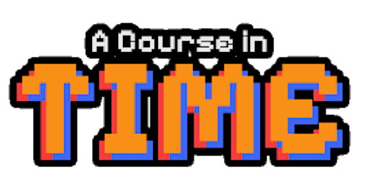

Level · Flagship project
A Course In Time
A 2D puzzle-platformer set in one hotel that exists in more than one era. Switch time and the building changes around you; what you carry doesn't.
64 evidence slots on this page are still empty. Empty slots stay marked. Nothing here is filled with a guess.

Checkpoint 1Overview
- Genre
- 2D puzzle-platformer / metroidvania
- Type
- University team project (COMP3150, Macquarie University)
- My role
- Team lead — mainly audio, coding and level design
- Team
- Team of 5
- Timeframe
- Pending pending: role confirmation (dates)
- Engine
- Unity 6
- Tools
- Unity 6, C#, FMOD
- Platforms
- Browser (WebGL) and Windows
- Stage
- In development (playable build on itch.io)
Checkpoint 2What it is
Mechanics in the playable build
As described on the itch.io page. The project is in development, so this is not a shipped storefront credit.
- Time Switch
- Shift between Present and Past. Platforms appear, walls vanish and hazards change.
- Time Beam
- Freeze objects across both timelines; bounce beams off mirrors to hit targets around corners.
- Box Pull
- Grab and move boxes into position to solve environmental puzzles.
- Dash and Double Jump
- Movement abilities that open paths that were visible but previously unreachable.
Structure
Progression is gated by abilities, not combat: each new tool opens paths that were visible but previously unreachable. The hotel is interconnected, with hidden rooms and shortcuts.
How many eras
The rule, in one picture
Past: a wall blocks the way. The crate has just been pushed into place.
Diagram of the rule as I describe it — the building changes between eras, what you move stays moved. It is an illustration, not a level from the game.
Checkpoint 3What I did
- The era system — collision layers, object state and physics swapping in step, with a crush check so time closing around the player is a death rather than a glitch.
- Procedural puzzle generators with Scene-view grid painting: pipe networks with a connectivity solver, and elemental puzzles that pick their own elements by counting how many valid solutions each set allows.
- A save system built around an objective ledger, so a reloaded world remembers which doors are open and which puzzles are done.
- An in-build debug console for playtesters — noclip, ability grants, scene jumps and objective control without an editor.
Source: My previous site (crumpyofcl.github.io). These are my claims — a design doc or code sample is still to be published.
Checkpoint 4Who did what
- Team lead / productionMe
- Audio (FMOD)Me — one of my main areas
- ProgrammingMe, with the team
- Level designMe — one of my main areas
- Art and animationPending Teammates (names optional, with their permission)
- QA / playtestingPending Who ran testing, and how
Checkpoint 5Gameplay video
Checkpoint 6Problem and design goal
- Problem
- Pending The design problem in 1–2 sentences, in your words.
- Design goal
- Pending The design goal / intended player experience (e.g. what should a player feel the first time time closes around them?).
Checkpoint 7Process
- IdeaPending Where the idea came from.
- ResearchPending References or research that shaped it.
- ConceptPending Concept sketch or one-page pitch.
- Paper prototypePending Photo of a paper prototype, if one was made.
- PrototypePending Confirm whether LIT_Flux Mechanics Showcase was an early prototype of this game.
- GreyboxPending Greybox screenshots of a room before art.
- PlaytestPending When and how it was playtested.
- AnalysisPending What the playtests showed.
- IterationPending What changed as a result.
- Playable buildA playable WebGL build and a Windows build are on itch.io. The project is still in development, so this is not a shipped storefront credit.
Stages are only marked done where I can show them.
Checkpoint 8Design decisions
Treat time closing around the player as a death, not a glitch
- Assumption (published)
- Test (pending)
- Evidence (pending)
- Insight (pending)
- Decision (published)
- Iteration (pending)
- Decision
- The era system swaps collision layers, object state and physics in step. A crush check catches the moment solid geometry from the other era would occupy the player's space.
- Why it mattered
- So that time closing around the player reads as a death — a rule of the world — rather than a glitch.
- Options considered
- Evidence pending Other options considered (e.g. block the switch, push the player out).
- Evidence
- Evidence pending What showed this was the right call (playtest, bug report).
- Trade-off
- Evidence pending What it cost.
- Result
- Evidence pending What happened after.
Build saving around an objective ledger
- Assumption (published)
- Test (pending)
- Evidence (pending)
- Insight (pending)
- Decision (published)
- Iteration (pending)
- Decision
- The save system records objectives, so a reloaded world remembers which doors are open and which puzzles are done.
- Why it mattered
- So a reloaded world remembers which doors are open and which puzzles are done, not just where the player was standing.
- Options considered
- Evidence pending Alternatives considered (e.g. serialising every object).
- Evidence
- Evidence pending —
- Trade-off
- Evidence pending —
- Result
- Evidence pending —
Put a debug console in the playtest build
- Assumption (published)
- Test (pending)
- Evidence (pending)
- Insight (pending)
- Decision (published)
- Iteration (pending)
- Decision
- Noclip, ability grants, scene jumps and objective control, available without the Unity editor.
- Why it mattered
- Playtesters and teammates can reach and repeat any situation without the editor.
- Options considered
- Evidence pending —
- Evidence
- Evidence pending How testers used it.
- Trade-off
- Evidence pending —
- Result
- Evidence pending —
Let elemental puzzles choose their own elements
- Assumption (pending)
- Test (pending)
- Evidence (pending)
- Insight (pending)
- Decision (published)
- Iteration (pending)
- Decision
- The generator counts how many valid solutions each candidate element set allows, and picks from that.
- Why it mattered
- Evidence pending Why solution-counting mattered for the design (in your words).
- Options considered
- Evidence pending —
- Evidence
- Evidence pending —
- Trade-off
- Evidence pending —
- Result
- Evidence pending —
Checkpoint 9Level design
- Level
- Pending Which level/room you designed and why you're presenting it (level design is one of your main areas on this project).
- Goals
- Pending What this level had to teach or test.
- Structure
- Ability-gated progression through an interconnected hotel.
- Flow
- Pending Flow diagram or annotated map (image).
- Mechanic introduction
- Pending The order mechanics are introduced and how each is taught.
- Challenge curve
- Pending How difficulty rises across the level (sketch is fine — no invented numbers).
- Greybox
- Pending Greybox capture(s).
- Final
- Pending Final screenshot of the same space.
Checkpoint 10Player experience
- Intended experience
- Pending Intended player experience, in your words.
- Design tools used to shape it
- Scene-view grid painting for authoring puzzles quickly.
- Element selection by counting valid solutions per element set.
- Debug console so playtesters can reach any state without the editor.
- Evidence
- Pending Evidence the experience landed: playtest notes, quotes you have permission to use, or observed behaviour.
Checkpoint 11Playtesting
Playtest builds included a debug console (noclip, ability grants, scene jumps, objective control) so testers could reach any state without the editor.
Sessions
- Observation
- Insight
- Design change
- Result
Checkpoint 12Iterations
- What changed
- Evidence pending What V1 was
- Why
- Evidence pending —
- Evidence
- Evidence pending —
- What changed
- Evidence pending What changed from V1
- Why
- Evidence pending Why it changed
- Evidence
- Evidence pending What evidence prompted it
- What changed
- Evidence pending What changed from V2
- Why
- Evidence pending Why it changed
- Evidence
- Evidence pending What evidence prompted it
- What changed
- Evidence pending What the current playable build contains
- Why
- Evidence pending Why this is the final form
- Evidence
- Evidence pending Result after the change
Checkpoint 13Results
Checkpoint 14Reflection
- What I tried
- Why it failed
- What I learned
- What I changed
Checkpoint 15Next
Checkpoint 16Evidence still to add
This page has 64 evidence slots I haven't filled yet. They are marked with dashed boxes rather than filled with guesses.